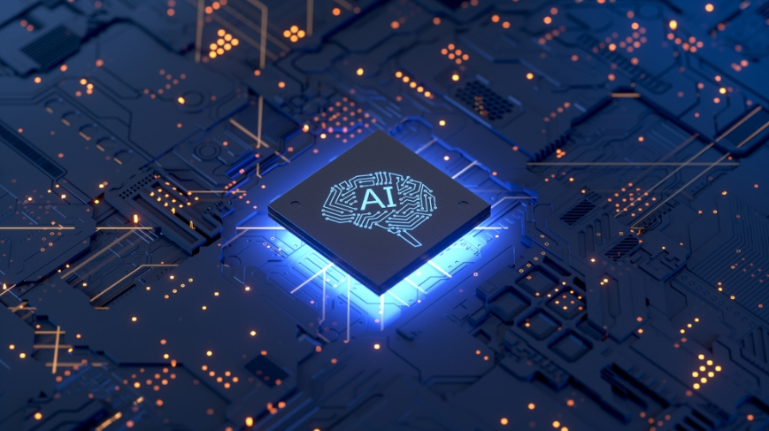

ينقسم الذكاء الاصطناعي في يومنا هذا إلى أربعة أنواع أساسية، تشبه إلى حدّ كبير هرم ماسلو للاحتياجات الأساسية، حيث أنّ أبسط أنواع
الذكاء الاصطناعي تستطيع القيام بالوظائف الأساسية فقط، في حين أنّ الأنواع الأكثر تقدّمًا هي بمثابة كيان واعٍ تمامًا بذاته وبما يدور من
حوله، ويشبه إلى حدّ كبير الوعي البشري.
|
-
الآلات التفاعلية Reactive Machines
تقوم الآلات التفاعلية بتنفيذ مهام أساسية فقط، ويعدّ هذا النوع من الذكاء الاصطناعي أبسط الأنواع على الإطلاق. تستجيب الآلات التي
تستخدم هذا النوع لبعض المدخلات ببعض المخرجات ولا تتضمّن آلية عملها أيّ عملية تعلّم ذاتي.
يمكننا القول أنّها أوّل مراحل الذكاء الاصطناعي، ومن الأمثلة عليها الأجهزة البسيطة التي تتعرّف على الوجه مثلاً. أو جهاز DeepBlue وهو
حاسوب تمكّن من هزيمة بطل العالم في لعبة الشطرنج.
|
|
-
الذاكرة المحدودة Limited Memory
وفي هذا النوع، يصبح لدى الذكاء الاصطناعي القدرة على تخزين البيانات، أو التوقّعات السابقة واستخدامها في في القيام بتنبؤات أفضل
مستقبلاً. ومع الذاكرة المحدودة، تصبح هندسة وبناء تقنيات التعلّم الآلي (Machine Learning) أكثر تعقيدًا.
من الأمثلة على الآلات التي تستخدم هذا النوع من الذكاء الاصطناعي، نجد السيارات ذاتية القيادة، والتي تخزّن مختلف البيانات المتعلّقة بحالة
الطرق والسيارات الأخرى في الطريق وغيرها من العوامل، وتتخذُ بناءً على هذه البيانات قرارات بشأن الطريق الذي ستسلكه أو ردّة الفعل
المعيّنة التي ستقوم بها.
من الجدير بالقول أنّ معظم الأجهزة الموجودة في يومنا هذا والمعتمدة على الذكاء الاصطناعي تستخدم الذاكرة المحدودة، بما فيها
تطبيقات المساعدة الشخصية مثل Google Assistance وبرامج التعرّف على الصوت والصورة، وروبوتات المحادثة على المواقع الإلكترونية
(chatbots) وغيرها.
|
|
|
 |
-
نظرية العقل Theory of Mind
في الوقت الذي تتواجد فيه الكثير من الآلات التي تستخدم أنواع الذكاء الاصطناعي السابقة، فإنّ هذا النوع لا يزال سوى فكرة نظرية، أو
مشروعٍ لا يزال العمل جاريًا على تطويره.
يمكننا القول أنّ نظرية العقل هي المرحلة المقبلة من أنظمة الذكاء الاصطناعي التي يعمل العلماء حاليًا على ابتكارها وتطويرها. وفي هذا
النوع ستتمكّن الآلة (بفضل تقنية الذكاء الاصطناعي) من فهم الكيانات التي تتفاعل معها، ومعرفة احتياجاتها ومشاعرها ومبادئها، بل وحتى
عملية التفكير التي تقوم بها.
وحتى تفهم الفرق بين هذا النوع وسابقه، لنتخيّل أنّك تقود سيارتك ذاهبًا إلى اجتماع مهمّ ولكن الازدحام المروري كان خانقًا ممّا جعلك تفقد
أعصابك.
قد تصيحُ غاضبًا طالبًا من Google Maps البحث عن طريق مختصر، لكن هذا التطبيق لن يقدّم لك أيّ دعم معنوي، كأن يقول لك: "هذا أسرع
طريق يمكننا الذهاب منه، هل تريد مني الاتصال بأحدهم للاعتذار أو تأجيل الاجتماع لبعض الوقت؟"
سيستمرّ Google Maps في إظهار نفس النتائج اعتمادًا على تقارير وبيانات الطرق التي يمتلكها.
لكن وباستخدام تقنية نظرية العقل، سيكون هذا التطبيق مرافقًا أفضل لك، سيفهم مشاعرك، أفكارك ويساعدك على الشعور بحال أفضل،
وهو ما يتم تطويره والعمل عليه الآن ضمن مجال الذكاء العاطفي الاصطناعي أو الـ Artificial Emotional Intelligence.
|
|
|
|
|